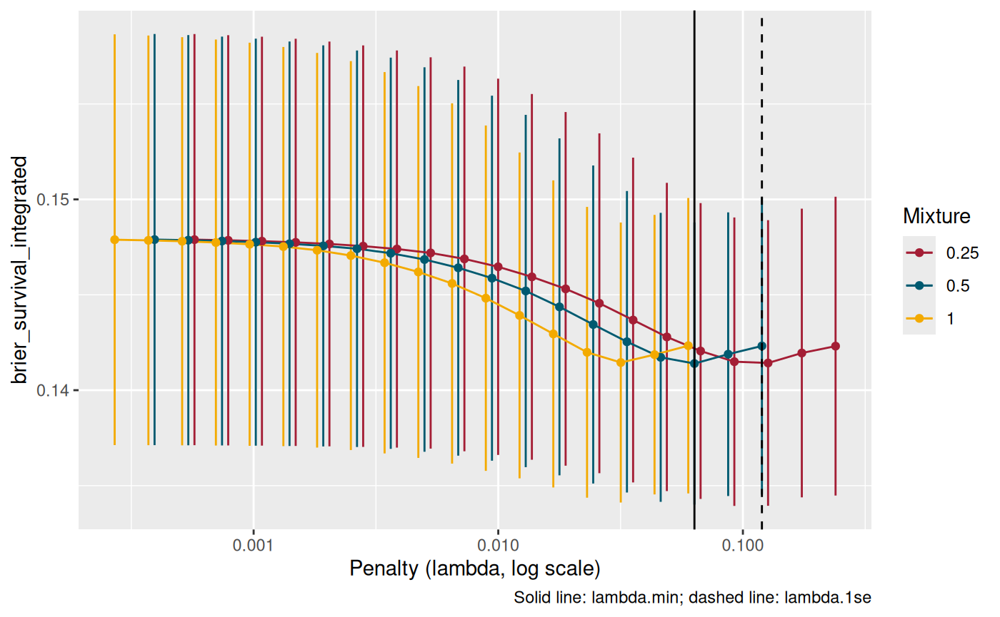

Penalized Cox Models and Nested Cross-Validation for Start/Stop Survival Data
Source:vignettes/nested_survival_cv.Rmd
nested_survival_cv.RmdWhy start/stop data needs care
In counting-process (start/stop) layout, each subject has one row per
interval, Surv(tstart, tstop, status), so covariates can
change over follow-up. Three things go wrong if those rows are treated
as independent observations:
-
Resampling leaks. Row-level folds, like those of
glmnet::cv.glmnet(), put some of a subject’s intervals in the analysis set and others in the assessment set. - Scoring is wrong, silently. yardstick’s survival metrics expect one row per subject with right-censored truth. Given start/stop truth, they return numbers without complaint, but those numbers count every interval as its own subject.
- Censoring is ignored. Brier scores need inverse-probability-of-censoring weights, or subjects lost to follow-up bias the score.
TempleCBE handles each of these:
| Function | What it does |
|---|---|
coxnet() |
Elastic-net Cox model (glmnet) with formula, recipe, and x/y interfaces (hardhat) |
cv_coxnet() |
Chooses mixture and penalty on
subject-grouped folds with a yardstick metric set |
nested_cv_coxnet() |
Estimates how well that whole tuning procedure generalizes |
surv_subject_truth(), censoring_km(),
graf_weights(), add_graf_weights()
|
Score any start/stop model with yardstick |
Comparison with existing R survival & modeling ecosystems
Survival analysis and prognostic modeling in R are supported by
several foundational packages, including survival, glmnet, tidymodels (censored, yardstick), and specialized
evaluation packages like pec and survAUC.
However, applying these frameworks to real-world clinical cohorts with
longitudinal visits, time-dependent covariates, and multi-center
structures reveals substantial hurdles:
Existing tools and their limitations in longitudinal clinical modeling
-
survival(Therneau): The foundational baseline for semi-parametric Cox proportional hazards and Kaplan-Meier estimation. While excellent for classical low-dimensional epidemiological inference, it lacks high-dimensional regularization (lasso, elastic net), automated cross-validation, and tidy resampling integration. -
glmnet::cv.glmnet(family = "cox")(Friedman et al.): The standard penalized Cox implementation. However:-
Data leakage on start/stop data:
cv.glmnetconstructs folds by randomly partitioning individual rows. In counting-process data (Surv(tstart, tstop, status)), this splits intervals belonging to the same patient across training and validation folds, leaking patient identity and future biomarker trajectory into the validation set. - No cluster/site-level grouping: It cannot hold out entire clinical sites or hospital clusters to evaluate generalizability across centers.
- Suboptimal metric selection: It chooses the penalty parameter using partial likelihood deviance or Harrell’s C-index, without support for time-dependent calibration, Integrated Brier Scores (IBS), or IPCW adjustments.
- No modern formula/recipe preprocessing: Predictors must be supplied as a raw numeric design matrix (), forcing manual one-hot encoding outside the cross-validation loop.
-
Data leakage on start/stop data:
-
tidymodels/censored/yardstick: The modern tidy modeling framework. Whilecensoredbridgesparsnipto survival models, its longitudinal counting-process support remains limited:-
Silent scoring failures:
yardsticksurvival metrics expect one row per subject with right-censored truth (Surv(time, event)). When provided with counting-process intervals (Surv(tstart, tstop, event)),yardstickreturns numbers without error, but silently treats every interval as an independent patient, biasing both Brier scores and ROC AUCs. - Missing integrated nested CV for penalized Cox: Evaluating regularized Cox models across an -mixture and -penalty grid with subject-level IPCW weights requires bespoke orchestration.
-
Silent scoring failures:
-
pec/riskRegression/survAUC: Provide inverse-probability-of-censoring weights and prediction error curves, but operate as standalone legacy systems decoupled fromrecipespreprocessing and thetidymodelsgrammar.
Where TempleCBE provides distinct value
TempleCBE unifies high-dimensional regularization, tidy
recipes, and rigorous counting-process survival theory into an
integrated, leak-free pipeline:
-
Strict patient- and site-grouped resampling:
cv_coxnet()andnested_cv_coxnet()enforce grouping by patient (group = "patient_id") or site (group = "site"), guaranteeing that all longitudinal intervals for a patient stay within either the analysis set or the assessment set. -
Formal start/stop to subject-truth translation:
surv_subject_truth()collapses multi-interval records into the valid single-row-per-subject truth required byyardstick, verifying that intervals do not overlap and that events occur only at terminal visits. -
Inverse-probability-of-censoring (Graf) weighting:
censoring_km(),graf_weights(), andadd_graf_weights()estimate the reverse Kaplan-Meier censoring distribution on the training set and attach time-dependent IPCW weights to test predictions, ensuring Brier scores and ROC curves remain unbiased. -
True nested cross-validation:
nested_cv_coxnet()optimizes hyperparameters strictly on inner folds and scores untouched outer assessment folds, delivering an honest estimate of clinical generalizability. -
Mixed continuous and categorical feature spaces:
Through
step_famd(),TempleCBEintegrates Factor Analysis of Mixed Data directly intorecipes, allowing joint dimensionality reduction across continuous clinical labs and discrete clinical stages. -
Translational laboratory export:
km_summary_to_prism()translates survival curves into GraphPad Prism-compatible format for oncology and pharmacology deliverables.
Feature comparison matrix
| Dimension | survival |
glmnet::cv.glmnet |
tidymodels (native) |
TempleCBE |
|---|---|---|---|---|
Counting-process
(tstart, tstop) |
Full support | Partial (leaks rows in CV) | Limited in censored
|
Full leak-free support |
| Resampling grouping | Manual | No (row-level only) | group_vfold_cv() |
Native patient & site grouping |
| Penalty selection metric | None (unpenalized) | Deviance or Concordance | Depends on metric set | Time-dependent IBS & Concordance |
| IPCW adjustment for start/stop | Manual | None | Silent row-level miscount | Automated via graf_weights()
|
| Tidy recipes integration | None | None | Standard recipes | Full recipes +
step_famd()
|
| Nested cross-validation engine | None | None | Manual multi-loop script | Automated via nested_cv_coxnet()
|
| Mixed-data dimensionality reduction | None | None |
step_pca (numeric only) |
step_famd (mixed continuous/discrete) |
| GraphPad Prism deliverable export | None | None | None | Built-in via km_summary_to_prism()
|
Specific operational and statistical gaps addressed
1. Resampling leakage in longitudinal patient cohorts
In clinical studies tracking chronic disease (e.g. cardiovascular
disease, oncology, sepsis in the ICU), patients undergo repeated visits
with drifting biomarkers. When penalized models are cross-validated at
the row level, a model trained on visit 1 and visit 3 is tested on visit
2 of the same patient. This produces artificially deflated
prediction error and false optimism. TempleCBE guarantees
zero leakage across all cross-validation stages.
2. Silent metric bias in counting-process evaluation
Standard evaluation metrics assume each observation corresponds to
one independent individual. Scoring longitudinal intervals directly
artificially inflates sample size (e.g. 150 patients with 4 visits each
scored as 600 independent patients) and ignores informative censoring.
TempleCBE provides the necessary mathematical
transformations (surv_subject_truth() +
graf_weights()) so that yardstick evaluates
patients properly.
3. High-dimensional clinical feature reduction for mixed data
Clinical prediction models frequently ingest hundreds of variables
combining continuous laboratory biomarkers with categorical ICD-10
diagnostic codes, cancer stages, and medication history. Standard PCA
cannot handle categorical variables without arbitrary one-hot expansion
that distorts covariance. TempleCBE::step_famd() provides
mathematically principled dimensionality reduction for mixed data within
standard tidymodels workflows.
Simulated data
Each patient has one to four visits at irregular times, belongs to one of five sites, and has a marker that drifts between visits. An event can only occur in a patient’s last interval.
set.seed(42)
sim_data <- purrr::map(seq_len(150), function(i) {
n_visits <- sample(1:4, 1)
tstop <- round(cumsum(runif(n_visits, 20, 40)))
age <- rnorm(1, mean = 58, sd = 10)
treatment <- sample(c("Control", "Treated"), 1)
marker <- rnorm(1) + cumsum(rnorm(n_visits, sd = 0.3))
risk <- 0.03 * (age - 58) + 0.8 * marker[n_visits] - 0.6 * (treatment == "Treated")
tibble(
patient_id = sprintf("PT_%03d", i),
site = paste0("site_", i %% 5 + 1),
tstart = c(0, head(tstop, -1)),
tstop = tstop,
status = c(rep(0L, n_visits - 1), rbinom(1, 1, plogis(risk))),
age = age,
bmi = rnorm(1, mean = 27, sd = 4),
marker = marker,
treatment = factor(treatment, levels = c("Control", "Treated"))
)
}) |>
purrr::list_rbind()
sim_data
#> # A tibble: 362 × 9
#> patient_id site tstart tstop status age bmi marker treatment
#> <chr> <chr> <dbl> <dbl> <int> <dbl> <dbl> <dbl> <fct>
#> 1 PT_001 site_2 0 39 0 52.4 26.6 -0.283 Treated
#> 2 PT_002 site_3 0 25 0 78.2 26.5 -0.174 Treated
#> 3 PT_002 site_3 25 54 0 78.2 26.5 0.310 Treated
#> 4 PT_002 site_3 54 93 0 78.2 26.5 0.321 Treated
#> 5 PT_003 site_4 0 36 0 67.7 28.2 1.23 Treated
#> 6 PT_003 site_4 36 64 0 67.7 28.2 0.694 Treated
#> 7 PT_003 site_4 64 98 0 67.7 28.2 0.642 Treated
#> 8 PT_003 site_4 98 118 0 67.7 28.2 1.01 Treated
#> 9 PT_004 site_5 0 28 1 65.9 35.5 0.268 Treated
#> 10 PT_005 site_1 0 37 0 51.9 17.3 -1.03 Treated
#> # ℹ 352 more rowsCollapsed to one row per patient, this is the truth yardstick needs:
surv_subject_truth(Surv(sim_data$tstart, sim_data$tstop, sim_data$status), sim_data$patient_id)
#> # A tibble: 150 × 3
#> .subject_id .entry .truth
#> <chr> <dbl> <Surv>
#> 1 PT_001 0 39+
#> 2 PT_002 0 93+
#> 3 PT_003 0 118+
#> 4 PT_004 0 28
#> 5 PT_005 0 61+
#> 6 PT_006 0 20+
#> 7 PT_007 0 20
#> 8 PT_008 0 28
#> 9 PT_009 0 51
#> 10 PT_010 0 38+
#> # ℹ 140 more rowsFitting one model: coxnet()
coxnet() fits the whole glmnet regularization path. The
formula interface expands factors into indicator columns.
fit <- coxnet(
Surv(tstart, tstop, status) ~ age + bmi + marker + treatment,
data = sim_data, mixture = 0.5, penalty = 0.01
)
fit
#> <coxnet_model> penalized Cox model (start/stop outcome)
#> rows: 362 predictors: 5 events: 65
#> mixture: 0.5 penalties on path: 64
#> default penalty: 0.01
tidy(fit)
#> # A tibble: 5 × 3
#> term estimate penalty
#> <chr> <dbl> <dbl>
#> 1 age 0 0.01
#> 2 bmi 0.0184 0.01
#> 3 marker 0.257 0.01
#> 4 treatmentControl 0 0.01
#> 5 treatmentTreated -0.00531 0.01Predictions follow tidymodels conventions:
.pred_linear_pred (larger means longer survival), or a
.pred list-column of survival probabilities.
Choosing mixture and penalty:
cv_coxnet()
With a recipe, preprocessing is learned inside each fold. The outcome
is a Surv column; the patient identifier gets the
"id" role, which cv_coxnet() uses to group
folds and score patients.
sim_data$surv <- Surv(sim_data$tstart, sim_data$tstop, sim_data$status)
cox_rec <- recipe(surv ~ age + bmi + marker + treatment + patient_id + site, data = sim_data) |>
update_role(patient_id, new_role = "id") |>
update_role(site, new_role = "site") |>
step_dummy(treatment) |>
step_normalize(all_numeric_predictors())
set.seed(2026)
cv <- cv_coxnet(cox_rec, sim_data, mixture = c(0.25, 0.5, 1), v = 5, nlambda = 30)
cv
#> <cv_coxnet> penalized Cox model, 5 resamples
#> metric: brier_survival_integrated (minimize)
#> mixture: 0.5 lambda.min: 0.06337 lambda.1se: 0.1196
#> mean at lambda.min: 0.1414 (std. error 0.00739)By default every fold is scored with the integrated Brier score (used to choose), concordance, and the time-specific Brier score and ROC AUC, at deciles of the observed event times.
collect_metrics(cv) |>
filter(.metric %in% c("brier_survival_integrated", "concordance_survival")) |>
arrange(.metric, mean)
#> # A tibble: 114 × 8
#> mixture penalty .metric .estimator .eval_time mean n std_err
#> <dbl> <dbl> <chr> <chr> <dbl> <dbl> <int> <dbl>
#> 1 0.5 0.0634 brier_survival_int… standard NA 0.141 5 0.00739
#> 2 0.25 0.127 brier_survival_int… standard NA 0.141 5 0.00748
#> 3 1 0.0317 brier_survival_int… standard NA 0.141 5 0.00734
#> 4 0.25 0.0923 brier_survival_int… standard NA 0.141 5 0.00756
#> 5 0.5 0.0461 brier_survival_int… standard NA 0.142 5 0.00757
#> 6 1 0.0435 brier_survival_int… standard NA 0.142 5 0.00732
#> 7 0.5 0.0871 brier_survival_int… standard NA 0.142 5 0.00743
#> 8 0.25 0.174 brier_survival_int… standard NA 0.142 5 0.00757
#> 9 1 0.0231 brier_survival_int… standard NA 0.142 5 0.00762
#> 10 0.25 0.0672 brier_survival_int… standard NA 0.142 5 0.00775
#> # ℹ 104 more rows
autoplot(cv)
tidy(cv, penalty = "lambda.1se")
#> # A tibble: 4 × 3
#> term estimate penalty
#> <chr> <dbl> <dbl>
#> 1 age 0 0.120
#> 2 bmi 0 0.120
#> 3 marker 0 0.120
#> 4 treatment_Treated 0 0.120Folds can be grouped by a coarser unit than the patient. With
group = "site", each fold holds out whole sites:
set.seed(2026)
cv_sites <- cv_coxnet(
cox_rec, sim_data, group = "site", v = 5, nlambda = 20,
metrics = metric_set(brier_survival_integrated, concordance_survival)
)
cv_sites$best_by_mixture
#> # A tibble: 1 × 5
#> mixture lambda_min lambda_1se mean std_err
#> <dbl> <dbl> <dbl> <dbl> <dbl>
#> 1 1 0.0368 0.0598 0.142 0.0144How well does tuning generalize?
nested_cv_coxnet()
A cross-validated score at the chosen settings is optimistic: the same assessment sets chose the settings. Nested cross-validation tunes on inner resamples, refits on each outer analysis set, and scores the untouched outer assessment set.
set.seed(2026)
nested_folds <- nested_cv(
sim_data,
outside = group_vfold_cv(group = patient_id, v = 3),
inside = group_vfold_cv(group = patient_id, v = 3)
)
nested <- nested_cv_coxnet(
nested_folds, cox_rec,
mixture = c(0.5, 1), rule = "1se", nlambda = 20,
metrics = metric_set(brier_survival_integrated, concordance_survival)
)
nested |> select(id, mixture, penalty)
#> # A tibble: 3 × 3
#> id mixture penalty
#> <chr> <dbl> <dbl>
#> 1 Resample1 0.5 0.144
#> 2 Resample2 1 0.0612
#> 3 Resample3 0.5 0.0903
collect_metrics(nested)
#> # A tibble: 2 × 6
#> .metric .estimator .eval_time mean n std_err
#> <chr> <chr> <dbl> <dbl> <int> <dbl>
#> 1 brier_survival_integrated standard NA 0.143 3 0.00922
#> 2 concordance_survival standard NA 0.544 3 0.00543Scoring any start/stop model with yardstick
The same helpers score predictions from any model. Here, a
coxnet() fit predicts each test patient’s survival from
their baseline covariates:
set.seed(2026)
split <- group_initial_split(sim_data, group = patient_id)
train <- training(split)
test <- testing(split)
times <- c(30, 60, 90)
model <- coxnet(
Surv(tstart, tstop, status) ~ age + bmi + marker + treatment,
data = train, mixture = cv$mixture, penalty = cv$lambda_min
)
train_truth <- surv_subject_truth(train$surv, train$patient_id)
test_truth <- surv_subject_truth(test$surv, test$patient_id)
baseline_rows <- test |> filter(tstart == 0) |> arrange(patient_id)
scored <- test_truth |>
bind_cols(predict(model, baseline_rows, type = "survival", eval_time = times)) |>
add_graf_weights(censoring = censoring_km(train_truth$.truth))
brier_survival_integrated(scored, truth = .truth, .pred)
#> # A tibble: 1 × 3
#> .metric .estimator .estimate
#> <chr> <chr> <dbl>
#> 1 brier_survival_integrated standard 0.121Existing analysis code: glmnet_IBS()
glmnet_IBS(), tune_over_alpha(), and
summarize_tune_results() keep their arguments. They now use
cv_coxnet() underneath, so the penalty is chosen on
patient-grouped folds and the IBS uses censoring weights.
legacy_rec <- recipe(~ age + bmi + marker + treatment + patient_id + tstart + tstop + status, data = sim_data) |>
update_role(patient_id, tstart, tstop, status, new_role = "id variable") |>
step_dummy(treatment) |>
step_normalize(all_numeric_predictors())
set.seed(2026)
glmnet_IBS(
split, alpha = 0.5, recipe = legacy_rec,
feature_names = c("age", "bmi", "marker", "treatment_Treated"),
eval_time = times, id_col = "patient_id", internal_folds = 3
)
#> # A tibble: 4 × 5
#> IBS lambda term estimate alpha
#> <dbl> <dbl> <chr> <dbl> <dbl>
#> 1 0.121 0.101 age 0 0.5
#> 2 0.121 0.101 bmi 0 0.5
#> 3 0.121 0.101 marker 0.0689 0.5
#> 4 0.121 0.101 treatment_Treated 0 0.5Highlighting core TempleCBE survival and modeling utilities
Beyond the core coxnet() modeling functions,
TempleCBE includes several specialized utilities that
address frequent friction points in biostatistical practice:
1. Mixed-data dimensionality reduction with
step_famd()
Clinical prognostic modeling frequently involves datasets with dozens of continuous lab values (e.g. creatinine, bilirubin, blood pressure) alongside categorical clinical indicators (e.g. disease stage, smoking status, sex, treatment center). Standard Principal Component Analysis ([recipes::step_pca()]) only operates on numeric columns; dummy-encoding categorical variables before PCA distorts the geometric distances because binary indicators have different variances than continuous variables.
step_famd() provides a native recipes step
for Factor Analysis of Mixed Data (Pagès 2004,
implemented via FactoMineR::FAMD): - Continuous variables
are normalized to unit variance. - Categorical variables are dummy-coded
and weighted inversely by their category frequencies, ensuring each
variable contributes proportionally regardless of its number of
levels.
library(recipes)
# Define clinical recipe with mixed numeric and categorical predictors
mixed_rec <- recipe(surv ~ age + bmi + marker + treatment + site + patient_id, data = sim_data) |>
update_role(patient_id, new_role = "id") |>
# Apply FAMD to compress continuous and discrete predictors into 3 components
step_famd(age, bmi, marker, treatment, site, num_comp = 3, prefix = "FAMD_")
# Train and inspect component contributions
prepped_famd <- prep(mixed_rec, training = sim_data)
baked_features <- bake(prepped_famd, new_data = NULL)
head(baked_features)
# Inspect variance explained by components
tidy(prepped_famd, number = 1, type = "variance")step_famd() integrates directly into
cv_coxnet() and nested_cv_coxnet(), ensuring
that components are learned strictly inside each training fold without
leakage.
2. Framework-agnostic survival scoring with
surv_helpers
The helper functions in surv_helpers.R are not
restricted to coxnet(): they enable any
model (e.g. random survival forests via ranger, gradient
boosted survival trees via xgboost, or deep learning
survival models) to be properly evaluated on longitudinal start/stop
cohorts using yardstick:
-
surv_subject_truth(): Collapses start/stop interval data to a single row per patient with right-censored truth. -
censoring_km(): Estimates the reverse Kaplan-Meier censoring distribution on the training cohort. -
graf_weights()/add_graf_weights(): Adds Inverse Probability of Censoring Weights (Graf et al. 1999) to prediction tibbles.
# Scoring any external model predictions on test subjects:
test_truth <- surv_subject_truth(test_longitudinal$surv, test_longitudinal$patient_id)
train_censoring <- censoring_km(train_subject_truth$.truth)
# Combine test truth with external model predictions and add IPCW weights
scored_predictions <- test_truth |>
bind_cols(external_model_predictions) |>
add_graf_weights(censoring = train_censoring)
# Compute proper, unbiased integrated Brier score
yardstick::brier_survival_integrated(scored_predictions, truth = .truth, .pred)3. Distributed elastic net tuning with
survival_metrics
When searching over a broad grid of elastic net mixing parameters
()
or evaluating competing candidate clinical formulas,
tune_over_alpha() and summarize_tune_results()
orchestrate parallel evaluation using furrr:
library(furrr)
plan(multisession, workers = 4)
# Parallel grid search across alpha values for an rsample split
alpha_results <- tune_over_alpha(
split,
recipe = cox_rec,
num_alpha_values = 10,
internal_folds = 5,
progress = TRUE
)
# Summarize results across all inner splits of a nested resample
nested_alpha_summary <- summarize_tune_results(nested_folds$inner_resamples[[1]])4. Translating survival curves to GraphPad Prism with
km_summary_to_prism()
In academic medical centers, biostatisticians frequently collaborate with laboratory scientists, pharmacologists, and clinical trialists who require Kaplan-Meier survival data formatted for GraphPad Prism for manuscript figures and FDA briefing documents.
Prism requires a unique table format: an X column of
timepoints, with separate columns per experimental group holding
1 for events, 0 for censored patients, and
NA for other groups. km_summary_to_prism()
converts standard survival::survfit summary tables directly
into this layout:
# Fit standard stratified Kaplan-Meier curve
fit_km <- survfit(Surv(time, status) ~ treatment, data = lung)
km_summary <- summary(fit_km, censored = TRUE)
km_df <- data.frame(
time = km_summary$time,
strata = km_summary$strata,
n.risk = km_summary$n.risk,
n.event = km_summary$n.event,
n.censor = km_summary$n.censor
)
# Convert to GraphPad Prism layout and export to Excel
prism_table <- km_summary_to_prism(
km_df,
out_xlsx = "deliverables/Prism_Survival_Table.xlsx"
)
head(prism_table)How others can use this technology (Adoption Patterns)
Here are five practical adoption patterns for biostatistical and clinical data science teams:
Pattern 1: Longitudinal EHR survival modeling with patient grouping
When modeling electronic health records with repeated clinical visits, replace standard row-level splitting with patient-grouped folds:
# Ensure patient-grouped folds
cv_fit <- cv_coxnet(
recipe = clinical_rec,
data = ehr_longitudinal_data,
group = "patient_id",
mixture = 0.5,
v = 5
)Pattern 2: Mixed clinical & biomarker dimensionality reduction
Combine high-dimensional lab panels and discrete clinical stages
using step_famd() inside a tidymodels
workflow:
rec <- recipe(surv ~ ., data = cohort) |>
update_role(patient_id, new_role = "id") |>
step_famd(all_predictors(), num_comp = 5)
fit <- coxnet(rec, data = cohort, mixture = 1.0, penalty = 0.05)Pattern 3: Multi-center clinical trial generalizability assessment
Evaluate whether a prognostic signature generalises across hospital sites by grouping cross-validation folds at the institutional site level:
# Hold out entire clinical sites during validation
site_cv <- cv_coxnet(
recipe = clinical_rec,
data = multi_site_study,
group = "hospital_site",
v = 10,
metrics = metric_set(brier_survival_integrated, concordance_survival)
)Pattern 4: Honest generalization auditing with nested cross-validation
Before presenting prognostic scores to clinical stakeholders or
submitting models for regulatory evaluation, estimate true out-of-sample
generalization using nested_cv_coxnet():
nested_plan <- nested_cv(
cohort_data,
outside = group_vfold_cv(group = patient_id, v = 5),
inside = group_vfold_cv(group = patient_id, v = 5)
)
honest_metrics <- nested_cv_coxnet(nested_plan, clinical_rec, mixture = c(0.5, 1.0))
collect_metrics(honest_metrics)Pattern 5: Translational laboratory handoff
Seamlessly bridge biostatistical analysis in R with laboratory
GraphPad Prism figure creation using
km_summary_to_prism():
# Deliver Prism-ready survival spreadsheets to clinical collaborators
km_summary_to_prism(
km_table,
out_xlsx = "reports/figures/Figure1_KaplanMeier_Prism.xlsx"
)Summary
TempleCBE fills the critical gap between classical
low-dimensional survival analysis and modern high-dimensional machine
learning on longitudinal clinical cohorts. By pairing leak-free grouped
resampling (cv_coxnet(), nested_cv_coxnet())
with proper IPCW scoring (surv_helpers), mixed-data feature
reduction (step_famd()), and translational handoff tools
(km_summary_to_prism()), it provides a robust, reproducible
foundation for clinical survival modeling.